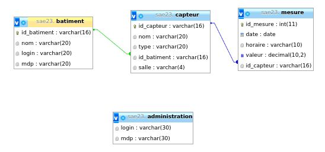
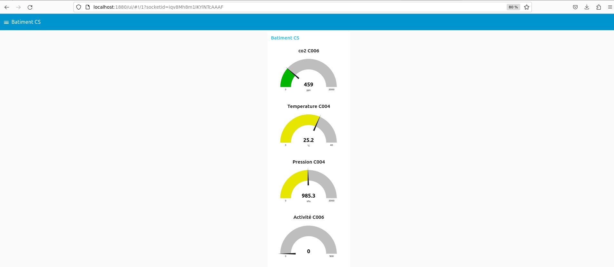
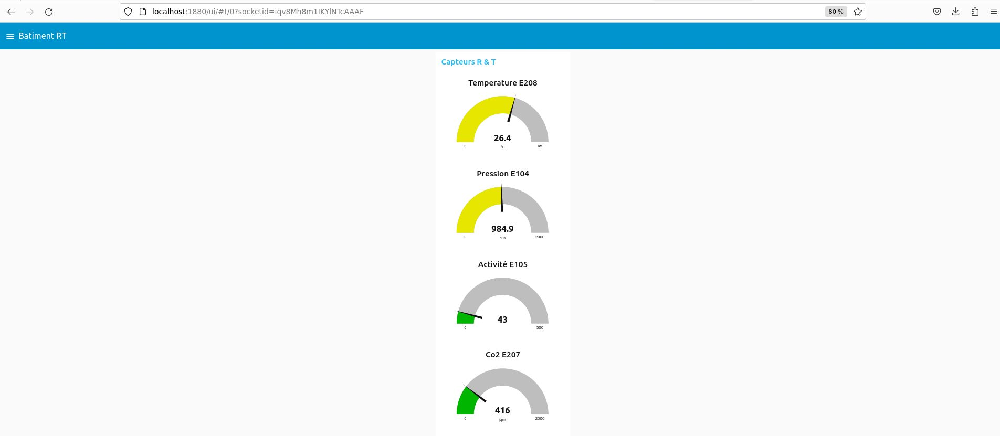
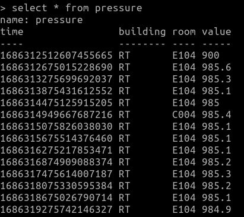
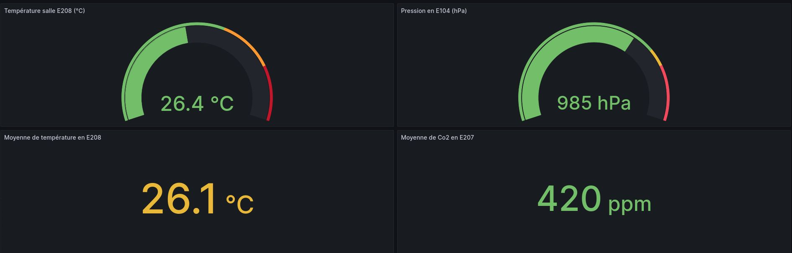
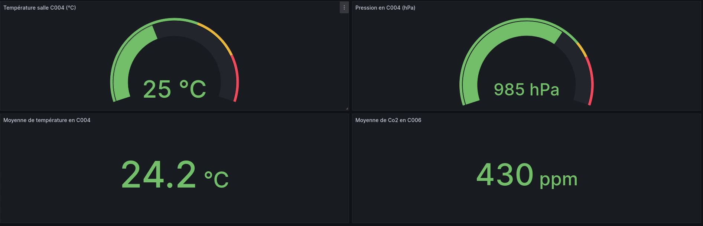

Mano DAUDIGNON
Durant cette SAE23, j'ai réalisé le site internet. Mon travail a été de faire les différentes pages du site ainsi que le php en lien avec les bases de données qui permet la connexion des utilisateurs et des administrateurs. Durant toutes cette SAE, j'ai donc dû utiliser les langages suivants : HTML, CSS et PHP.
Le HTML
Pour réaliser le HTML j'ai d'abord fait un plan du site afin d'avoir une idée de son organisation. J'ai ensuite fait les éléments qui se retrouve sur différenres pages comme le header, la barre de navigation ainsi que le footer. Je me suis ensuite penché sur les pages les plus inportante comme la première page, puis la page de connection etc. jusqu'à finir par la page de la gestion de projet.
Le CSS
Le CSS a été repris d'une SAÉ faites au premier semestre. J'ai tout de même dû le reprendre afin que les éléments qui ont été ajouté en HTML puuisse être propre. J'ai aussi suprimé le code CSS qui ne servait plus.
Le PHP
Une fois que le HTML et la CSS étaient finis, j'ai intégré le php aux pages qui le demande. J'ai d'abord fais la connexion à la base de donnée, j'ai ensuite fais la fonction qui permet d'autoriser l'accées respectivement à leurs pages web si l'utilisateur ou l'administrateur c'est connecté. Par la suite, j'ai fais la fonction qui permet la déconnexion des utilisateur.
Les problèmes
J'ai rencontré plusieurs difficultés durant ce projet, notamment sur le PHP. J'ai passé de longs moments pour essayer de comprendre comment réaliser la connexion à la base de donnée ansi que la manières de faire un sorte que lorsqu'un utilisateur ou un adminastrateur se connecte, il soit renvoyé sur la bonne page. Après de longues recherches sur Internet, j'ai compris qu'il me fallait plusieurs fichiers différents. Pour chaque action réalisée qui doit faire appel à du php, plusieurs fichiers sont appelé afin de se connecter à la base de données, se connecter en utilisateur, voir qui est connecté, et même se déconnecter.
Anthony SUISSE
Durant cette SAE23, j'ai réalisé le GANTT, la création de la table SQL via phpMyAdmin, la création d'un script bash récupérant les données MQTT via JS pour les envoyer sur notre base de données, l'affichage des différentes valeurs récupérées dans la base de données grâce à un script PHP et enfin le code PHP calculant les moyens, le minimum et le maximum en fonction du type de donnée (CO2, température, etc.)
GANTT
J'ai réalisé le Gantt prévisionnel et final. Pour ce Gantt, il était nécessaire de planifier le temps de réalisation de chaque tâche, mais aussi de savoir qui va réaliser la tâche.
Aucun problème rencontré.

Création de la table SQL via phpMyAdmin
Pour la réalisation des différentes tables comme batiment, capteur, mesure et administration, je me suis beaucoup aidé du diaporama de présentation de la SAE 23 à la slide 11 nommée *Contraintes conceptuelles de la BD*. Pour le type de valeur (varchar, int, etc.), nous nous sommes concertés pour savoir ce qui irait le mieux. Mais nous avons quand même dû réaliser certaines modifications tout au long du projet, par exemple les colonnes avec leur type de caractère et leur nombre maximum.
Aucun problème rencontré.
Création d'un script bash récupérant les données MQTT via JS pour les envoyer sur notre base de données
En ce qui concerne le script bash, je me suis inspiré du script de récupération de la SAE 15. J'ai dû améliorer certains points, comme à propos du stockage des données. Je les ai mis dans la base de données, comme demandé dans le cahier des charges, à la place d'un fichier temporel comme dans la SAE 15.
J'ai rencontré un problème majeur qui est de faire en sorte que même si on rajoute des capteurs, le script fonctionne toujours en recevant les données de ce capteur avec le bon type de donnée. Pour résoudre ce problème, j'ai dû réaliser quelques recherches sur différents forums ou sites web. Au final, j'ai réussi à résoudre mon problème en faisant en sorte que le script fasse la requête MQTT sur tous les capteurs que comporte la table "capteur" dans la base de données SQL.
Affichage des différentes valeurs récupérées dans la base de données grâce à un script PHP
Pour le PHP qui permet d'afficher les mesures dans des tableaux, j'ai fait en sorte d'avoir 3 affichages différents. Une version du tableau pour les visiteurs qui voient juste la dernière valeur de chaque capteur, une autre pour les gestionnaires de bâtiment qui voient seulement les capteurs de leur bâtiment mais toutes les valeurs. Enfin, il y a la table d'administrateur qui voit toutes les mesures de tous les capteurs dans chaque bâtiment. J'ai donc d'abord réalisé une requête SQL via le PHP pour récupérer les valeurs nécessaires. Ensuite, je crée une boucle qui ajoute des colonnes à un tableau tant qu'il y a des mesures.
Au niveau des problèmes, j'en ai rencontré un seul sur cette partie, qui est le fait de savoir quel gestionnaire est connecté pour récupérer les valeurs qui appartiennent à son bâtiment. Avec l'aide de mon coéquipier qui a effectué le système de connexion sur le site web, nous avons enregistré le login de la personne qui se connecte dans une fonction. Enfin, dans la requête SQL, je devais préciser le fait de vouloir récupérer les données appartenant au bâtiment auquel est lié le login.
Code PHP calculant les moyens, le minimum et le maximum en fonction du type de donnée (CO2, température, etc.)
Lors de la réflexion pour le calcul des métriques, j'avais plusieurs possibilités, mais la plus simple était de relever les différentes métriques telles que le minimum, le maximum et la moyenne au moment de la requête SQL. Ensuite, avec une boucle "while" pour afficher les valeurs calculées et récupérées pour les différents types.
Aucun problème rencontré.
Ilias ALAMI CHENTOUFI
Durant cette SAE23, j'ai réalisé le script de suppression/ajout de capteurs/batiments, et j'ai travaillé sur la solution site dynamique utilisant des dockers. Pour cela, j'ai manipulé les dockers suivants: influxdb, grafana et nodered.
NODE-RED
Node-RED est un outil de programmation visuelle open source qui permet de créer rapidement des applications IoT (Internet des objets) et des workflows basés sur des nœuds interconnectés. Il fournit une interface graphique conviviale pour connecter et gérer des flux de données entre différents appareils et services.
Dans notre cas, je m'en suis servi afin de récupérer les données envoyées par le broker de l'IUT et les manipuler afin d'en extraire ce que l'on veut tel que le type de capteurs et sa valeurs, la salle, etc... Vous pourrez voir ci-dessous les différents bâtiments que j'ai choisi (CS et RT) et les capteurs de co2, température, activité et pression.
Nous pouvons également, grâce aux noeuds "dashboard", afficher les différentes données extraites sur des dashboard:


INFLUXDB
InfluxDB est une base de données open source conçue spécifiquement pour capturer, stocker et interroger efficacement de grandes quantités de données temporelles générées par des applications IoT, des systèmes de surveillance, des événements en temps réel et d'autres sources de données qui évoluent dans le temps.
Dans notre cas, je m'en suis servi afin de stocker ce que nodered récupérait des données du broker de l'IUT dans une base de donnée :

GRAFANA
Grafana est une plateforme open source de visualisation et de monitoring des données. Elle permet de créer des tableaux de bord interactifs et personnalisables pour afficher et analyser des métriques, des logs et d'autres types de données en temps réel.
Dans notre cas, je m'en suis servi pour récupérer ce que contenait la base de donnée Influxdb et l'afficher sous forme de plusieurs graphiques assez esthétiques:
Réseaux et Télécoms:

Carrières Sociales:

PROBLÈMES RENCONTRÉE
Parmi tout les problèmes rencontrées (erreurs dans les scripts, problèmes de configuration du serveur xampp, etc...), mon plus gros problème a sûrement été l'installation de la base de donnée influxdb. Elle a necessité la création de deux nouvelles VM pour que le docker marche enfin.